Activity 2
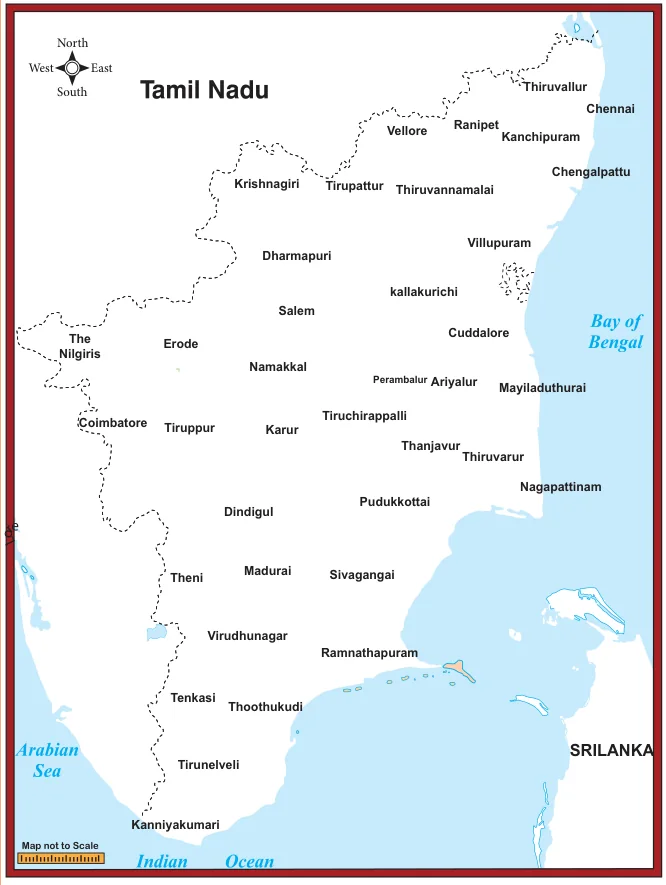
Four Tamil Nadu State Transport buses take the following routes. The first is a one-way journey, and the rest are round trips. Find the places on the map, put points on them and connect them by lines to draw the routes. The places connecting four different routes are given as follows.
- Kanniyakumari, Tirunelveli, Virudhunagar, Madurai
- Sivagangai, Puthukottai, Thanjavur, Dindigul, Sivagangai
- Erode, Coimbatore, Dharmapuri, Karur, Erode
- Chennai, Cuddalore, Krishnagiri, Vellore, Chennai
You will get the following shapes.

Label the vertices with city names, draw the shapes exactly as they are shown on the map without rotations.
We observe that the first is a single line, the four points are collinear. The other three are closed shapes made of straight lines, of the kind we have seen before. We need names to call such closed shapes, we will call them polygons from now on.
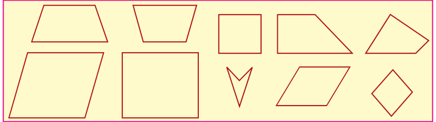
How do polygons look? They have sides, with points at either end. We call these points as vertices of the polygon. The sides are line segments joining the vertices. The word poly stands for many, and a polygon is a many-sided figure.
Note
Concave polygon: Polygon having any one of the interior angle greater than \(180^{\circ}\)
Convex Polygon: Polygon having each interior angle less than \(180^{\circ}\)
(Diagonals should be inside the polygon)
How many sides can a polygon have? One? But that is just a line segment. Two ? But how can you get a closed shape with two sides? Three? Yes, and this is what we know as a triangle. Four sides?
Squares and rectangles are examples of polygons with 4 sides but they are not the only ones. Here (Fig. 4.20) are some examples of 4-sided polygons. We call them quadrilaterals.
4.3.1 Special Names for Some Quadrilaterals
- A parallelogram is a quadrilateral in which opposite sides are parallel and equal.
- A rhombus is a quadrilateral in which opposite sides are parallel and all sides are equal.
- A trapezium is a quadrilateral in which one pair of opposite sides are parallel.
Draw a few parallellograms, a few rhombuses (correctly called rhombii, like cactus and cactii) and a few trapeziums (correctly written trapezia).
The great advantage of knowing properties of quadrilateral is that we can see the relationships among them immediately.
- Every parallelogram is a trapezium, but not necessarily the other way.
- Every rhombus is a parallelogram, but not necessarily the other way.
- Every rectangle is a parallelogram, but not necessarily the other way.
- Every square is a rhombus and hence every square is a parallelogram as well.
For “not necessarily the other way” mathematicians usually say “the converse is not true”. A smart question then is: just when is the other way also true? For instance, when is a parallelogram also a rectangle? Any parallelogram in which all angles are also equal is a rectangle. (Do you see why?) Now we can observe many more interesting properties. For instance, we see that a rhombus is a parallelogram in which all sides are also equal.
Note
You know bi-cycles and tri-cycles? When we attach bi or tri to the front of any word, they stand for 2 (bi) or 3 (tri) of them. Similarly quadri stands for 4 of them. We should really speak of quadri-cycles also, but we don't. Lateral stands for sideways, thus quadrilateral means a 4-sided figure. You know trilaterals; they are also called triangles !
After 4 ? We have: 5 – penta, 6 – hexa, 7 – hepta, 8 – octa, 9 – nano, 10 – deca. Conventions are made by history. Trigons are called triangles, quadrigons are called quadrilaterals. Continuing in the same way we get pentagons, hexagons, heptagons, octagons, nanogons and decagons. Beyond these, we have 11-gons, 12-gons etc. Perhaps you can draw a 23-gon!
4.3.2 More Special Names
When all sides of a quadrilateral are equal, we call it equilateral. When all angles of a quadrilateral are equal, we call it equiangular. In triangles, we discussed that equilateral triangles as those with all sides equal. Now we can call them equiangular triangles as well!
We thus have:
A rhombus is an equilateral parallelogram.
A rectangle is an equiangular parallelogram.
A square is an equilateral and equiangular parallelogram.
Here are two more special quadrilaterals, called kite and isosceles trapezium.
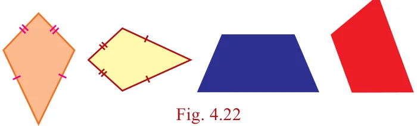
4.3.3 Types of Quadrilaterals
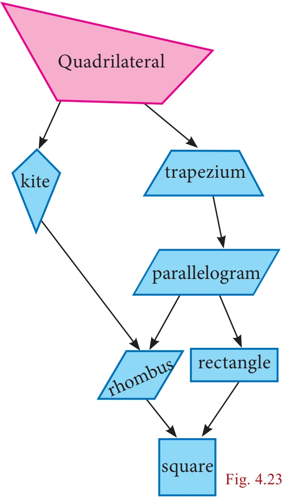
Progress Check
Answer the following question.
- Are the opposite angles of a rhombus equal?
- A quadrilateral is a \(\underline{\qquad\qquad}\) if a pair of opposite sides are equal and parallel.
- Are the opposite sides of a kite equal?
- Which is an equiangular but not an equilateral parallelogram?
- Which is an equilateral but not an equiangular parallelogram?
- Which is an equilateral and equiangular parallelogram?
- \(\underline{\qquad\qquad}\) is a rectangle, a rhombus and a parallelogram.
Activity 3
Step – 1: Cut out four different quadrilaterals from coloured glazed papers.
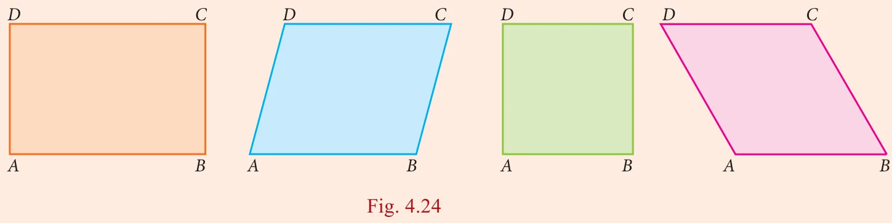
Step – 2: Fold the quadrilaterals along their respective diagonals. Press to make creases. Here, dotted line represent the creases.
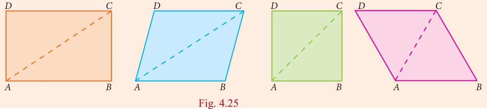
Step – 3: Fold the quadrilaterals along both of their diagonals. Press to make creases.
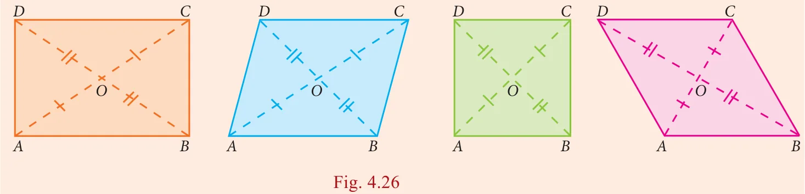
We observe that two imposed triangles are congruent to each other. Measure the lengths of portions of diagonals and angles between the diagonals.
Also do the same for the quadrilaterals such as Trapezium, Isosceles Trapezium and Kite.
From the above activity, measure the lengths of diagonals and angles between the diagonals and record them in the table below:

Activity 4
Angle sum for a polygon
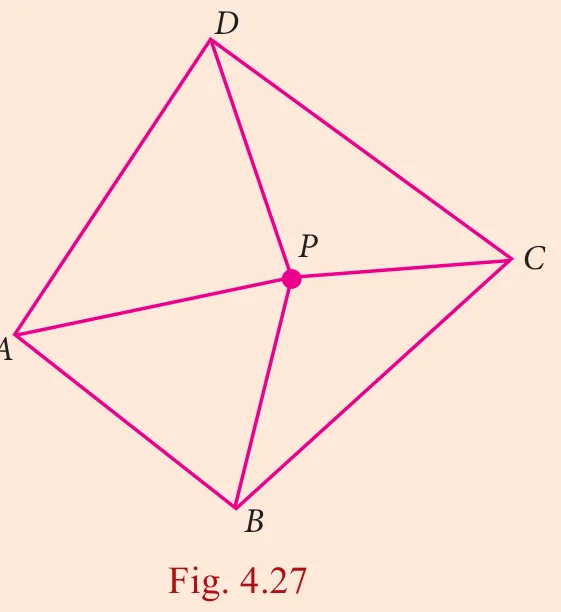
Draw any quadrilateral \(ABCD\).
Mark a point \(P\) in its interior.
Join the segments \(PA\), \(PB\), \(PC\) and \(PD\).
You have 4 triangles now.
How much is the sum of all the angles of the 4 triangles?
How much is the sum of the angles at P?
Can you now find the ‘angle sum’ of the quadrilateral \(ABCD\)?
Can you extend this idea to any polygon?
Thinking Corner
- If there is a polygon of \(n\) sides \((n \ge 3)\), then the sum of all interior angles is \((n-2) \times 180^{\circ}\)
- For the regular polygon (All the sides of a polygon are equal in size)
- Each interior angle is \(\frac{(n-2)}{n} \times 180^{\circ}\)
- Each exterior angle is \(\frac{360^{\circ}}{n}\)
- The sum of all the exterior angles formed by producing the sides of a convex polygon in the order is \(360^{\circ}\) .
- If a polygon has ‘\(n\)’ sides , then the number of diagonals of the polygon is \(\frac{n(n-3)}{2}\)
4.3.4 Properties of Quadrilaterals

Note
- A rectangle is an equiangular parallelogram.
- A rhombus is an equilateral parallelogram.
- A square is an equilateral and equiangular parallelogram.
- A square is a rectangle , a rhombus and a parallelogram.
Progress Check
- State the reasons for the following.
- A square is a special kind of a rectangle.
- A rhombus is a special kind of a parallelogram.
- A rhombus and a kite have one common property.
- A square and a rhombus have one common property.
- What type of quadrilateral is formed when the following pairs of congruent triangles are joined together?
- Equilateral triangle.
- Right angled triangle.
- Isosceles triangle.
- Identify which ones are parallelograms and which are not.
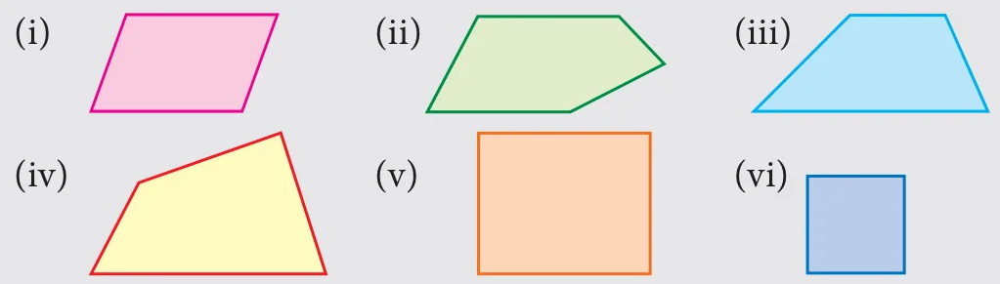
- Which ones are not quadrilaterals?
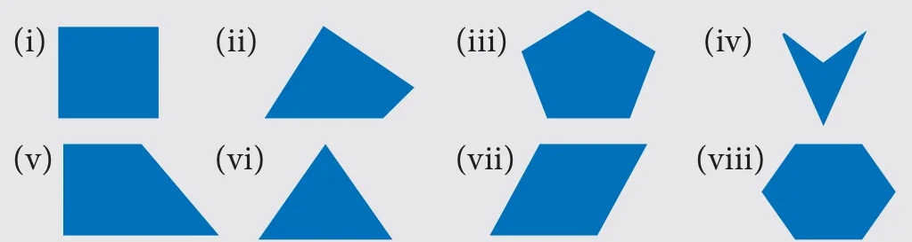
- Identify which ones are trapeziums and which are not.
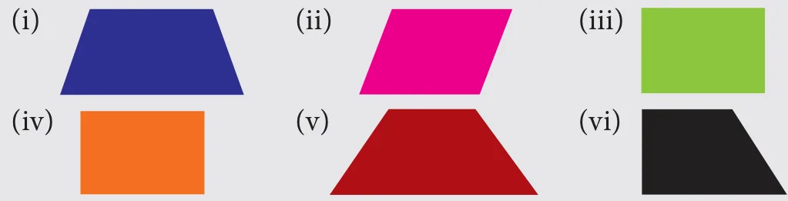
4.3.5 Properties of Parallelogram
We can now embark on an interesting journey. We can tour among lots of quadrilaterals, noting down interesting properties. What properties do we look for, and how do we know they are true?
For instance, opposite sides of a parallelogram are parallel, but are they also equal? We could draw any number of parallelograms and verify whether this is true or not. In fact, we see that opposite sides are equal in all of them. Can we then conclude that opposite sides are equal in all parallelograms? No, because we might later find a parallelogram, one which we had not thought of until then, in which opposite sides are unequal. So, we need an argument, a proof.
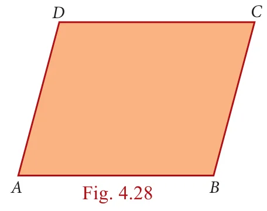
Consider the parallelogram \(ABCD\) in the given Fig. 4.28. We believe that \(AB = CD\) and \(AD = BC\), but how can we be sure? We know triangles and their properties. So we can try and see if we can use that knowledge. But we don't have any triangles in the parallelogram \(ABCD\).
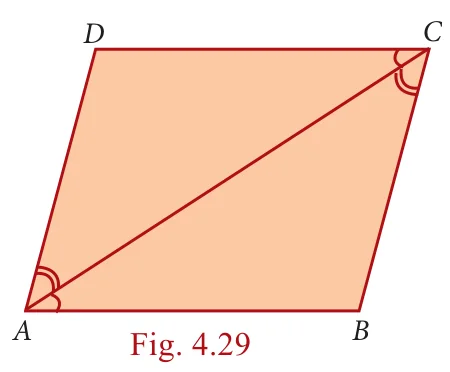
This is easily taken care of by joining \(AC\). (We could equally well have joined \(BD\), but let it be \(AC\) for now.) We now have 2 triangles \(ADC\) and \(ABC\) with a common side \(AC\). If we could somehow prove that these two triangles are congruent, we would get \(AB = CD\) and \(AD = BC\), which is what we want!
Is there any hope of proving that \(\triangle ADC\) and \(\triangle ABC\) are congruent? There are many criteria for congruence, it is not clear which one is relevant here.
So far we have not used the fact that \(ABCD\) is a parallelogram at all. So we need to use the facts that \(AB \parallel DC\) and \(AD \parallel BC\) to show that \(\triangle ADC\) and \(\triangle ABC\) are congruent. From sides being parallel we have to get into some angles being equal. Do we know any such properties? we do, and that is all about transversals!
Now we can see it clearly. \(AD \parallel BC\) and \(AC\) is a transversal, hence \(\angle DAC = \angle BCA\). Similarly, \(AB \parallel DC\), \(AC\) is a transversal, hence \(\angle BAC = \angle DCA\). With \(AC\) as common side, the ASA criterion tells us that \(\triangle ADC\) and \(\triangle ABC\) are congruent, just what we needed. From this we can conclude that \(AB = CD\) and \(AD = BC\).
Thus opposite sides are indeed equal in a parallelogram.
The argument we now constructed is written down as a formal proof in the following manner.
Theorem 1
In a parallelogram, opposite sides are equal
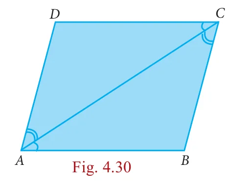
Given \(ABCD\) is a parallelogram
To Prove \(AB=CD\) and \(DA=BC\)
Construction Join \(AC\)
Proof
Since \(ABCD\) is a parallelogram
\(AD \parallel BC\) and \(AC\) is the transversal
\(\angle DAC = \angle BCA \to (1)\) (alternate angles are equal)
\(AB \parallel DC\) and \(AC\) is the transversal
\(\angle BAC = \angle DCA \to (2)\) (alternate angles are equal)
In \(\triangle ADC\) and \(\triangle CBA\)
\(\angle DAC = \angle BCA\) from (1)
\(AC\) is common
\(\angle DCA = \angle BAC\) from (2)
\(\triangle ADC \cong \triangle CBA\) (By ASA)
Hence \(AD = CB\) and \(DC = BA\) (Corresponding sides are equal)
Along the way in the proof above, we have proved another property that is worth recording as a theorem.
Theorem 2
A diagonal of a parallelogram divides it into two congruent triangles.
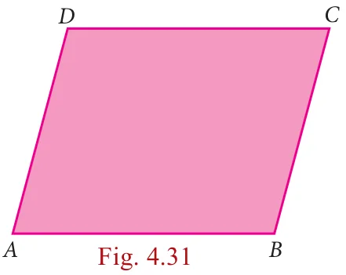
Notice that the proof above established that \(\angle DAC = \angle BCA\) and \(\angle BAC = \angle DCA\). Hence we also have, in the figure above,
\(\angle BCA + \angle BAC = \angle DCA + \angle DAC\)
But we know that:
\(\angle B + \angle BCA + \angle BAC = 180\)
and \(\angle D + \angle DCA + \angle DAC = 180\)
Therefore we must have that \(\angle B = \angle D\).
With a little bit of work, proceeding similarly, we could have shown that \(\angle A = \angle C\) as well. Thus we have managed to prove the following theorem:
Theorem 3
The opposite angles of a parallelogram are equal.
Now that we see congruence of triangles as a good “strategy”, we can look for more triangles. Consider both diagonals \(AC\) and \(DB\). We already know that \(\triangle ADC\) and \(\triangle CBA\) are congruent. By a similar argument we can show that \(\triangle DAB\) and \(\triangle BCD\) are congruent as well. Are there more congruent triangles to be found in this figure?
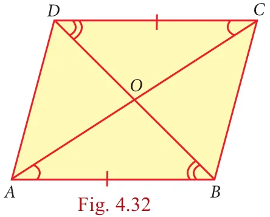
Yes. The two diagonals intersect at point \(O\). We now see 4 new \(\triangle AOB\), \(\triangle BOC\), \(\triangle COD\) and \(\triangle DOA\). Can you see any congruent pairs among them?
Since \(AB\) and \(CD\) are parallel and equal, one good guess is that \(\triangle AOB\) and \(\triangle COD\) are congruent. We could again try the ASA crierion, in which case we want \(\angle OAB = \angle OCD\) and \(\angle ABO = \angle CDO\). But the first of these follows from the fact that \(\angle CAB = \angle ACD\) (which we already established) and observing that \(\angle CAB\) and \(\angle OAB\) are the same (and so also \(\angle OCD\) and \(\angle ACD\)). We now use the fact that \(BD\) is a transversal to get that \(\angle ABD = \angle CDB\), but then \(\angle ABD\) is the same as \(\angle ABO\), \(\angle CDB\) is the same as \(\angle CDO\), and we are done.
Again, we need to write down the formal proof, and we have another theorem.
Theorem 4
The diagonals of a parallelogram bisect each other.
It is time now to reinforce our concepts on parallelograms. Consider each of the given statements, in the adjacent box, one by one. Identifiy the type of parallelogram which satisfies each of the statements. Support your answer with reason.
- Each pair of its opposite sides are parallel.
- Each pair of opposite sides is equal.
- All of its angles are right angles.
- Its diagonals bisect each other.
- The diagonals are equal.
- The diagonals are perpendicular and equal.
- The diagonals are perpendicular bisectors of each other.
- Each pair of its consecutive angles is supplementary.
Now we begin with lots of interesting properties of parallelograms. Can we try and prove some property relating to two or more parallelograms? A simple case to try is when two parallelograms share the same base, as in Fig.4.33
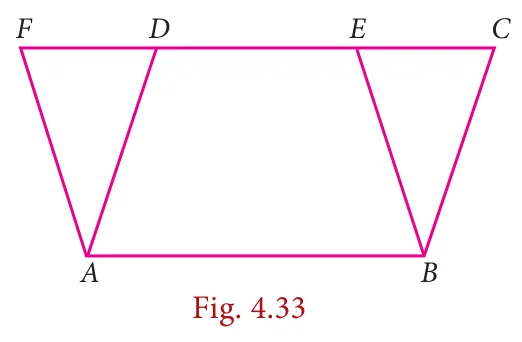
We see parallelograms \(ABCD\) and \(ABEF\) are on the common base \(AB\). At once we can see a pair of triangles for being congruent \(\triangle ADF\) and \(\triangle BCE\). We already have that \(AD = BC\) and \(AF = BE\). But then since \(AD \parallel BC\) and \(AF \parallel BE\), the angle formed by \(AD\) and \(AF\) must be the same as the angle formed by \(BC\) tand \(BE\). Therefore \(\angle DAF = \angle CBE\). Thus \(\triangle ADF\) and \(\triangle BCE\) are congruent.
That is an interesting observation; can we infer anything more from this ? Yes, we know that congruent triangles have the same area. This makes us think about the areas of the parallelograms \(ABCD\) and \(ABEF\).
Area of \(ABCD\) = area of quadrilateral \(ABED\) + area of \(\triangle BCE\)
= area of quadrilateral \(ABED\) + area of \(\triangle ADF\)
= area of \(ABEF\)
Thus we have proved another interesting theorem:
Theorem 5:
Parallelograms on the same base and between the same parallels are equal in area.
In this process, we have also proved other interesting statements. These are called Corollaries, which do not need separate detailed proofs.
Corollary 1: Triangles on the same base and between the same parallels are equal in area.
Corollary 2: A rectangle and a parallelogram on the same base and between the same parallels are equal in area.
These statements that we called Theorems and Corollaries, hold for all parallelograms, however large or small, with whatever be the lengths of sides and angles at vertices.
Example 4.1
In a parallelogram \(ABCD\), the bisectors of the consecutive angles \(\angle A\) and \(\angle B\) insersect at \(P\). Show that \(\angle APB = 90^{\circ}\)
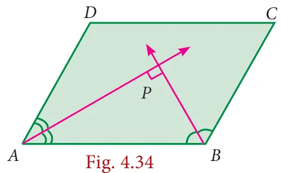
Solution
\(ABCD\) is a parallelogram \(AP\) and \(BP\) are bisectors of consecutive angles \(\angle A\) and \(\angle B\).
Since the consecutive angles of a parallelogram are supplementary
\(\angle A + \angle B = 180^{\circ}\)
\(\frac{1}{2}\angle A + \frac{1}{2}\angle B = \frac{180^{\circ}}{2}\)
\(\Longrightarrow \angle PAB + \angle PBA = 90^{\circ}\)
In \(\triangle APB\),
\(\angle PAB + \angle APB + \angle PBA = 180^{\circ}\) (angle sum property of triangle)
\(\angle APB = 180^{\circ} - [\angle PAB + \angle PBA]\)
\(= 180^{\circ} - 90^{\circ} = 90^{\circ}\)
Hence Proved.

Example 4.2

In the Fig.4.35 \(ABCD\) is a parallelogram, \(P\) and \(Q\) are the mid-points of sides \(AB\) and \(DC\) respectively. Show that \(APCQ\) is a parallelogram.
Solution
Since \(P\) and \(Q\) are the mid points of \(AB\) and \(DC\) respectively
Therefore \(AP = \frac{1}{2} AB\) and
\(QC = \frac{1}{2} DC \qquad (1)\)
But \(AB = DC\) (Opposite sides of a parallelogram are equal)
\(\Longrightarrow \frac{1}{2} AB = \frac{1}{2} DC\)
\(\Longrightarrow AP = QC \qquad (2)\)
Also , \(AB \parallel DC\)
\(\Longrightarrow AP \parallel QC \qquad (3)\) [\(\because\) \(ABCD\) is a parallelogram]
Thus , in quadrilateral \(APCQ\) we have \(AP = QC\) and \(AP \parallel QC\) [from (2) and (3)]
Hence , quadrilateral \(APCQ\) is a parallelogram.
Example 4.3
\(ABCD\) is a parallelogram Fig.4.36 such that \(\angle BAD = 120^{\circ}\) and \(AC\) bisects \(\angle BAD\) show that \(ABCD\) is a rhombus.
Solution
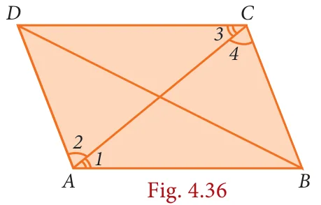
Given \(\angle BAD = 120^{\circ}\) and \(AC\) bisects \(\angle BAD\)
\(\angle BAC = \frac{1}{2} \times 120^{\circ} = 60^{\circ}\)
\(\angle 1 = \angle 2 = 60^{\circ}\)
\(AD \parallel BC\) and \(AC\) is the traversal
\(\angle 2 = \angle 4 = 60^{\circ}\)
\(\triangle ABC\) is isosceles triangle \([\because \angle 1 = \angle 4 = 60^{\circ}]\)
\(\Longrightarrow AB = BC\)
Parallelogram \(ABCD\) is a rhombus.
Example 4.4
In a parallelogram \(ABCD\) , \(P\) and \(Q\) are the points on line \(DB\) such that \(PD = BQ\) show that \(APCQ\) is a parallelogram
Solution
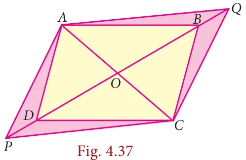
\(ABCD\) is a parallelogram.
\(OA = OC\) and
\(OB = OD\) \((\because \text{Diagonals bisect each other})\)
now \(OB + BQ = OD + DP\)
\(OQ = OP\) and \(OA = OC\)
\(APCQ\) is a parallelogram.